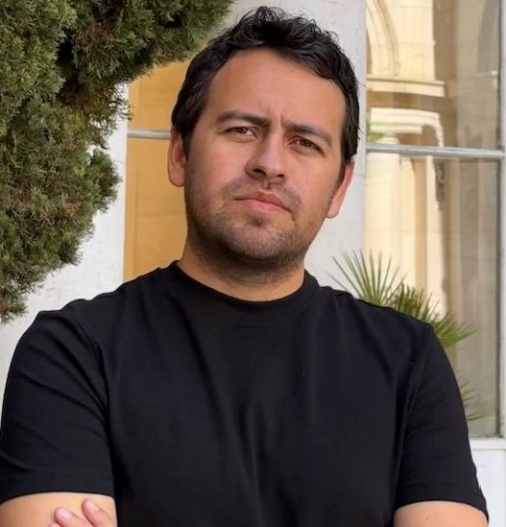

Ponente magistralEdgar A. Ruvalcaba-Gómez
Doctor en Derecho, Gobierno y Políticas Públicas por la Universidad Autónoma de Madrid (UAM), España. Actualmente es profesor investigador en la Universidad de Guadalajara (UDG), adscrito al Departamento de Políticas Públicas y jefe del área de Innovación de la Administración Pública del Instituto de Investigaciones en Innovación y Gobernanza de la Universidad de Guadalajara (UDG). Es Coordinador Nacional de la Red Académica de Gobierno Abierto en México y es miembro del Sistema Nacional de Investigadas e Investigadores (SNII) en el nivel I.
Realiza investigación sobre inteligencia artificial en el sector público, gobierno abierto, datos abiertos, gobierno digital, y políticas anticorrupción. Ha sido investigador visitante en el Trinity College de Dublín, Irlanda, así como en el Center for Technology in Government (CTG) de la Universidad de Albany, Nueva York, Estados Unidos.
Fue miembro del Madrid Institute for Advanced Study (MIAS) como François Chevalier Fellow 2022-2023, y se ha desempeñado como Profesor Visitante en la Universidad Autónoma de Madrid (UAM). Asimismo, ha colaborado como consultor para la Open Government Partnership, World Justice Project, entre otras instituciones.